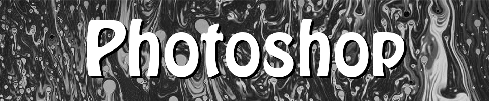

Home |
Photoshop |
Vector |
Animate |
In-Design |
Contact
Here is my rasterized self! I had a lot of fun with the self given prompt of remaking myself in a horror context for this project. I tried use as many scary images as i could to alter my body that i put in this looming, intimidating pose; such as skulls, snakes, lizards creepy tree branches, and a dark scheme of black and white. Put a good amount of distortion on all the images to compensate for the low res iphone picture I took of myself - it worked to scary affect I feel.